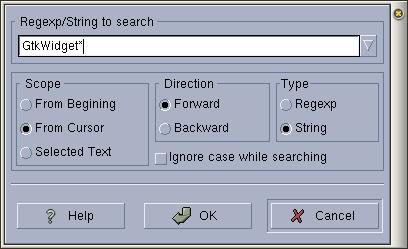
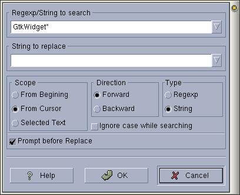

|
|
Anjuta Manual version 0.1Copyright (c) Kh. Naba Kumar Singh |
| Contents | Index | Shortcuts |
| PREV: Browsing with tags | UP: File Operations | NEXT: Finding in multiple files and folders |
To search a text or Regexp string in the current file, activate Edit/Find or press Alt+F. This will display the find dialog box.
Enter the string in the entry box and specify if the string is a normal string or regional expression (REGEXP). Also specify the direction of search, whether the search is case sensitive or not and the scope of the search. Then click OK to start searching.
If the search is successful, the matched text in the document will be hi-lited and your focus will be taken to the line containing the match. If the search is not successful, a dialog box for match not found will be displayed.

Now if you want to search again, you can do this by clicking find button on the main tool-bar. This will find the next match in the previously specified direction. You can even change the search text when you do find again if you so wish. Enter the new string in the Find string entry box in the main tool-bar.
Searching and replacing:
The search and replace is similar to the find text, except that you also specify the replace text in the replace text entry box and whether you should be prompted before the replace takes place.
